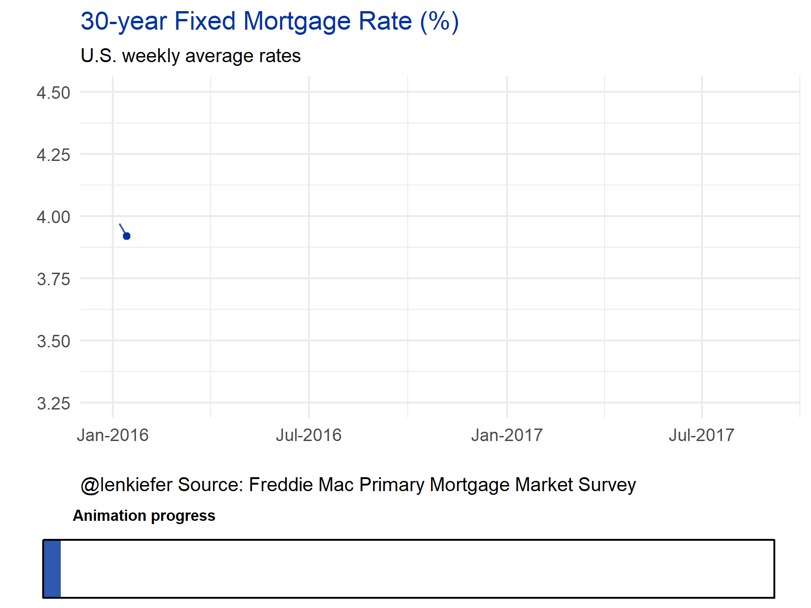

I LIKE TO MAKE ANIMATED GIFS with my data. But frankly, sometimes they can be confusing. I got a good suggestion via twitter in response to a gif I shared there:
This is very cool. Has anyone added a visual “progress bar” to a gganimate loop to show the frame visually? It's hard to grasp time as text.
— Jonathan Spring (@JustTheSpring) August 6, 2017
Now it’s very likely that others have tried this, but I haven’t seen it. But let’s go ahead an make one in R.
If we use cowplot together with ggplot2 it’s pretty easy.
GET SOME DATA
Let’s use some real world data. Following the strategy from this post we’ll go to the Saint Louis Federal Reserve Economic Database (FRED) and get some data. We’ll try out 30-year fixed mortgage rates, stored with ticker MORTGAGE30US.
We’ll plot a simple time series for weekly rates since 2016. We’ll have a progress bar keep track of how far we’ve gone. First, get some data and make a static plot.
library(tidyverse)## Loading tidyverse: ggplot2
## Loading tidyverse: tibble
## Loading tidyverse: tidyr
## Loading tidyverse: readr
## Loading tidyverse: purrr
## Loading tidyverse: dplyr## Conflicts with tidy packages ----------------------------------------------## filter(): dplyr, stats
## lag(): dplyr, statslibrary(quantmod)## Loading required package: xts## Loading required package: zoo##
## Attaching package: 'zoo'## The following objects are masked from 'package:base':
##
## as.Date, as.Date.numeric##
## Attaching package: 'xts'## The following objects are masked from 'package:dplyr':
##
## first, last## Loading required package: TTR## Version 0.4-0 included new data defaults. See ?getSymbols.library(cowplot)##
## Attaching package: 'cowplot'## The following object is masked from 'package:ggplot2':
##
## ggsavelibrary(lubridate)##
## Attaching package: 'lubridate'## The following object is masked from 'package:base':
##
## datedf= getSymbols('MORTGAGE30US',src='FRED', auto.assign=F) ## 'getSymbols' currently uses auto.assign=TRUE by default, but will
## use auto.assign=FALSE in 0.5-0. You will still be able to use
## 'loadSymbols' to automatically load data. getOption("getSymbols.env")
## and getOption("getSymbols.auto.assign") will still be checked for
## alternate defaults.
##
## This message is shown once per session and may be disabled by setting
## options("getSymbols.warning4.0"=FALSE). See ?getSymbols for details.df = data.frame(date=time(df), coredata(df) )
ggplot(data=filter(df,year(date)>=2016), aes(x=date, y=MORTGAGE30US))+
geom_line(color="#0033a0",alpha=0.82)+
theme_minimal()+
geom_point(data=tail(df,1),size=1.5,color="#0033a0")+
scale_x_date(limits=c(as.Date("2016-01-01"),as.Date("2017-08-31")),
date_labels="%b-%Y")+
labs(x="", y="",
title="30-year Fixed Mortgage Rate (%)",
subtitle="U.S. weekly average rates",
caption="@lenkiefer Source: Freddie Mac Primary Mortgage Market Survey")+
theme(plot.title=element_text(color="#0033a0"),
plot.caption=element_text(hjust=0))## Warning: Removed 4 rows containing missing values (geom_path).## Warning: Removed 1 rows containing missing values (geom_point).
Now, let’s build a progress bar indicator and put it below the plot.
dlist<-unique(filter(df,year(date)>=2016)$date)
N<-length(dlist)
## Make a function to create the bar
g.progress<- function(i=10,maxi=N){
ggplot(data=data.frame(x="progress",y=i/maxi),
aes(x=x,y=y))+geom_bar(stat="identity",color=NA,fill="#0033a0",alpha=0.82)+
geom_bar(stat="identity", data=data.frame(x="progress",y=1),
color="black",fill=NA)+
theme_void()+scale_y_continuous(limits=c(0,1))+
theme(plot.title=element_text(size=8,hjust=0.1))+
labs(title="Animation progress")+
coord_flip()
}Test it out:
g.progress(10)
Now we can use cowplot to combine our progress bar with our original plot.
First, let’s make a function that returns our line plot given an index number.
# function for line plot:
g.plot<- function(i=10,d.list=dlist){
ggplot(data=filter(df,year(date)>=2016 & date<=d.list[i]),
aes(x=date, y=MORTGAGE30US))+
geom_line(color="#0033a0",alpha=0.82)+
theme_minimal()+
scale_y_continuous(limits=c(3.25,4.5))+
geom_point(data=filter(df,date==d.list[i]),size=1.5,color="#0033a0")+
scale_x_date(limits=c(as.Date("2016-01-01"),as.Date("2017-08-31")),
date_labels="%b-%Y")+
labs(x="", y="",
title="30-year Fixed Mortgage Rate (%)",
subtitle="U.S. weekly average rates",
caption="@lenkiefer Source: Freddie Mac Primary Mortgage Market Survey")+
theme(plot.title=element_text(color="#0033a0"),
plot.caption=element_text(hjust=0))
}
g.plot(10)
Now combine via cowplot’s plot_grid() function:
#use plot_grid to arrange the layout 5 to 1 ratio seems to work okay
plot_grid(g.plot(10),g.progress(10), rel_heights=c(5,1),ncol=1)
We can create an animation by cycling through our data and saving the images and combining them into a gif. Let’s see if I can use the purrr tricks to save the images. I’m going to save my images into a folder called bar. Then I’ll use Imagemagick to create the gif.
# Function for plots:
plotf<- function(i=10){plot_grid(g.plot(i),g.progress(i), rel_heights=c(5,1),ncol=1)}
# set up your directory where you want to save images
mydir<-("YOURDIRECTORY") # change YOURDIRECTORY
# function for saving images
plot.save<-function(i=10){
# add 5000 to index so images are in the right order (10 comes after 9)
file_path = paste0(mydir, "/plot-",5000+i ,".png")
ggsave(filename=file_path, plotf(i),
width = 8, height = 6 , units = "cm",scale=1.85)
}
# use PURRR map (instead of lapply)
# see: https://jennybc.github.io/purrr-tutorial/bk01_base-functions.html
map(1:N, plot.save)Once you have all these images save, you’ll need to combine them in a gif. I use Imagemagick from the command line. You just need to run:
cd YOURDIRECTORY
and then
magick convert -delay 10 loop -0 *.png pmmsline.gif
And you should have file like this in YOURDIRECTORY. Note that *.png is going to convert all png files into your gif, so make sure YOURDIRECTORY only contains the image files you want in your gif.

Maybe this could work for you?